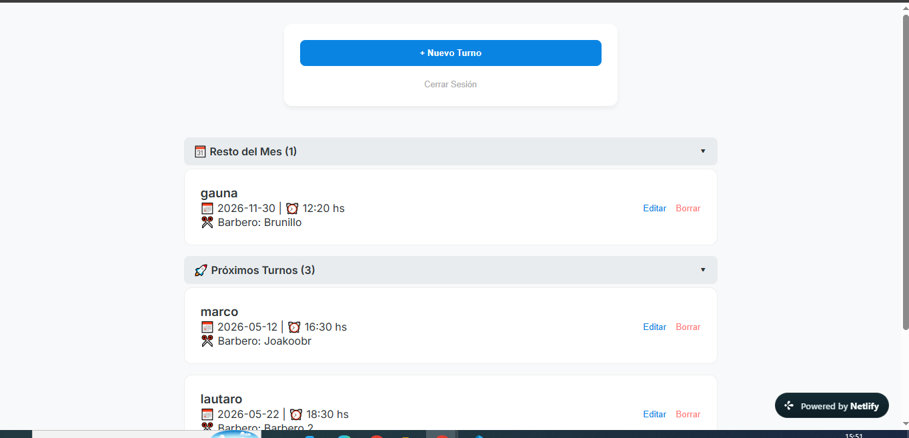
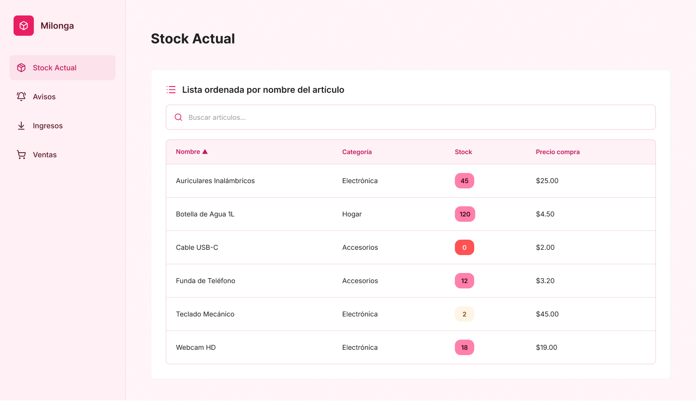
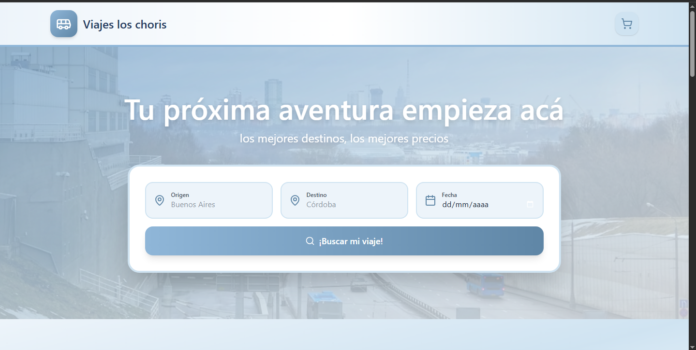
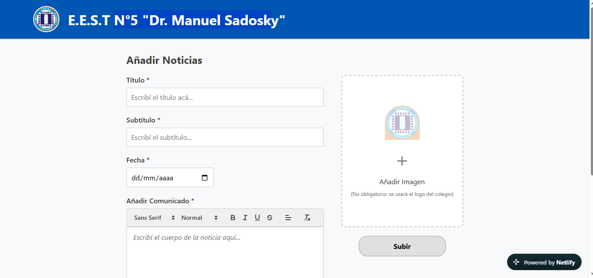
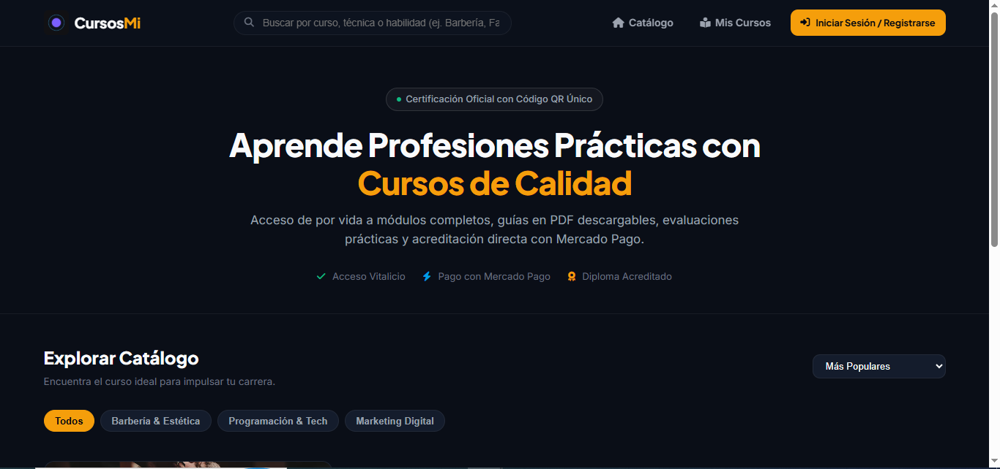
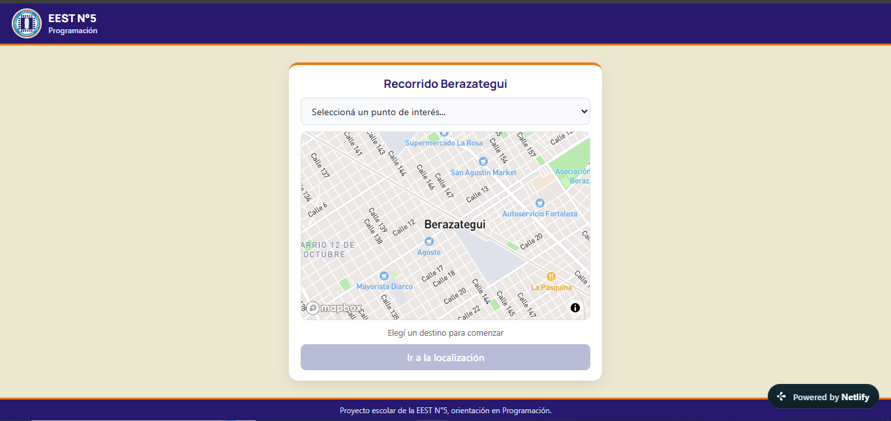

Firebase / Realtime
Firebase Auth
JavaScript ES6
Gestión en Vivo
UI Moderna
OBRbarber — Barbería y Gestión de Turnos
Sistema interactivo de reserva y gestión de turnos en tiempo real para barbería moderna. Incluye autenticación con Firebase, selector dinámico de barberos, agenda horaria (10:00 a 21:00 hs), almacenamiento en la nube y panel modal de citas confirmadas.

Python + PHP
Python CustomTkinter
PHP
Inventario & Ventas
E-Commerce
Bazar Milonga — Control de Stock & Tienda Online
Ecosistema integral de comercio y stock: software de escritorio en Python con CustomTkinter para control de inventario, stock en vivo, alertas y balance de ventas, junto a una tienda online en PHP con carrito de compras y catálogo dinámico.

Olimpiadas E.E.S.T N°5
Olimpiadas 2026
Scrum / UML
Carrito & Pasajes
DER Relacional
Los Choris — Paquetes de Viaje
Plataforma web turística y carrito de pasajes desarrollada para las Olimpiadas de Programación de la E.E.S.T N°5. Cuenta con catálogo de ofertas, información de unidades y choferes, emisión de tickets para Rapipago/Pago Fácil y modelado completo DER/UML.

Institucional Escolar
Quill.js WYSIWYG
PHP Backend
E.E.S.T N°5
Gestión Editorial
Portal de Noticias Escolares — E.E.S.T N°5
Portal web institucional para la publicación y administración autónoma de comunicados escolares de la Escuela Técnica N°5 "Dr. Manuel Sadosky". Incorpora editor de texto enriquecido Quill.js, carga de imágenes y gestión dinámica de artículos con PHP.

Plataforma Académica
Gestión Educativa
Roles & Alumnos
Oficios & Render Cloud
Cursos
CursosMi — Venta de Cursos
Plataforma de venta de cursos de formación y oficios. Cuenta con catálogo categorizado, visualizador interactivo de temarios, validación de certificados y registro de alumnos.

Turismo & Geolocalización
Diseño Web
MapBox API
Puntos de interés
Responsive
Recorrido Berazategui & Puntos de Interés
Guía interactiva municipal y turística de Berazategui orientada a vecinos y visitantes. Preseta mapas interactivos, con Geolocalización, trazado de recorridos, frecuencias de transporte y datos históricos.
 Placa controladora + programación en bloques
Placa controladora + programación en bloques
Robótica Móvil
Placa controladora
Programación en bloques
Robótica inclusiva
AutoBot - Robot auto para niños
Vehículo robótico móvil diferencial diseñado para prácticas de robótica y cinemática. Cuenta con chasis modular liviano, ruedas motrices independientes acopladas a motorreductores DC, rueda loca estabilizadora y placa controladora embebida.
 Robotica + Arduino
Robotica + Arduino
Impresion3D
ArduinoNano
Robotica
Perrobot — Proyecto de Robotica
Cuadrúpedo robótico bioinspirado modelado y fabricado con tecnología de impresión 3D. Emplea un servomotor independiente articulados en la cola para el control del movimiento, con ojos luminosos y ladrido potente.
🐕 Proyecto Físico / Robótica — Cuadrúpedo articulado 3D
 ArduinoUNO + ESP32
ArduinoUNO + ESP32
ArduinoUNO
Shield Ethernet
Interfaz & Alertas
Sistema
SAT - Sistema de Alerta para Talleres / Proyecto Fisico
Sistema de Alerta para Talleres creado para accionar con velocidad frente a emergencias ocurridas en los talleres escolares de escuelas técnicas.